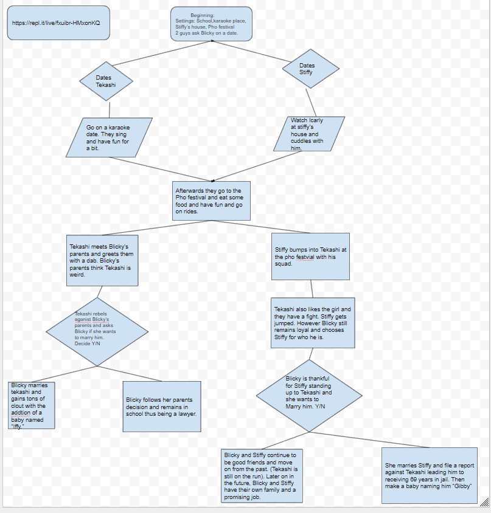

The game is a one player game in which you are against a bot.
The first player to reach 9 points is the winner, but when
one of the players reaches 5 points the ball will switch to
a "bomb" and can change the speed at any random time making
it unpredictable. You use the key "W" to move up and key
"S" to move down and make contact with the ball until
the ball scores past the defender or opposition and will be
granted a point depending on who scores. The use of randomness
in the game applies to the random time the ball increases it speed
when it is during its "bomb" costume and the direction of the ball
will go towards when making contact with a paddle. The difficulty
of the game is the increase in ball speed and random act of ball speed
during the game that makes it almost unpredictable.
This algorithm basically shows how the ball should react when making contact
with the paddle and where it should go after. It also tells and adjust
the ball speed and increase it as time goes on. The script or algorithm
basically shows how the ball should react after being hit which is the
important out of any other script or algorithm.
In our story, you are playing as a female name Blicky that meets
two nerds named Tekashi and Stiffy who both have a crush on you.
They both ask you out on a date and you must decide who to go out with.
The person you decide to go out with will have different storylines and endings
based on your decision.
Flowchart of our Python Story:

In our program, the iterative process was the decision makings that
allowed the user to input "y","n","t", and "s" including their capitals. If
the user were to enter any other characters, the program would give
a response to the user that the their input is invalid and they have
to try again. The incremental process in our program consist of functions
that act as scenes of our story to help organize our story and make sure each story is
running correctly. Some of the problems that my partner and I encountered were the
animation to allow the scenes run smoothly like a story that disorganize the scenes
chronilogically. This situation was resolved through adding more functions and
editing our "typing animation" towards the story by fixing the spelling mistakes.
Our scenes that are organized into functions are a form of procedural abstraction
because when I created the story lines, I know the endings and paths of it.
As the reader interacts with the story, they know there will be endings
or decision making stakes that'll come across the story but they won't know
when or how it'll be implemented. The reader will still get the same ending
if they decide to choose the same path over and over from the beginning. The advantages
of abstracting our scenes into functions is basically giving us more organization
that allows us to modify each scenes or functions without interferring with all the scenes
and it gives randomness or act of surprise for entertainment purpose of a story.
One of the favorite stories that I have read was Fate/Stay Night series
which is a manga that has three different alternate endings and has a admirable
scenes that shocks me with each different storyline that makes me reread it.